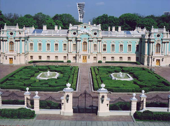
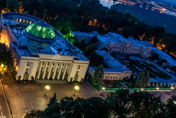

Mariinsky park is one of the oldest parks in Kyiv. Park built by Olexandr's II wife Mary.
Park was named over palace that same name, that was built in 1750 - 1755. Today this historical building is a state residence. Here pass off solemny events, heroes rewarding and reception of delegations.
The biggest achievement of Ukrainian architecture is building of.Verhovna Rada (1936 - 1939)
In front of building of Verhovna Rada and Mariinsky palace in park stay Konstytutsii Square.
On territory of Mariinsky park are monument to general Vatutin on his grave, cast iron decorative fontain, park statue "Kyiv chestnut tree" and summer stage.
The most romantic place in Kyiv is Bridge of lovers. It's a park bridge over Petrivs'ka Alley, that join Mariinsky and Khreshchaty parks.In 2013 near Bridge of lovers was been opened sculpture "Love history".
Mariinsky and Khreshchaty parks make Park terret, it's one of the most popular excursion routes.
Mariinsky park is monument of landscape architecture.
Address : Kiev , str . Mykhailo Hrushevsky , st.m.Arsenalna